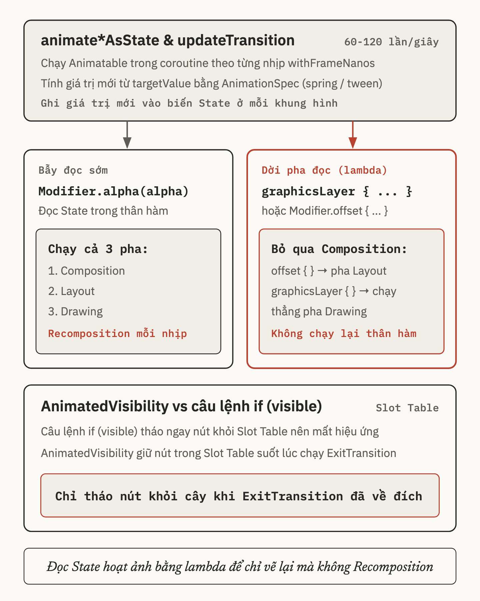

Animations
Bản 30 giây
Khi bạn đổi biến trạng thái từ thu gọn sang mở rộng, màn hình sẽ nhảy bụp một cái nếu không có bước chuyển tiếp. Các hàm như animateDpAsState hay AnimatedVisibility tự chia khoảng cách đó thành hàng chục bước nhỏ theo từng nhịp khung hình. Nếu chỉ đọc giá trị ở bước đặt tọa độ hoặc bước vẽ, giao diện sẽ lướt mượt mà không chạy lại thân hàm.
Cần biết trước
Vấn đề buộc nó ra đời
Trong hệ thống View cũ, khi dùng ObjectAnimator, bạn phải tự gán giá trị đầu, cuối và tự hủy khi đổi ý giữa chừng. Nếu đang chạy hiệu ứng đóng thẻ mà người dùng bấm mở lại ngay, hình ảnh rất dễ bị giật ngược về điểm xuất phát.
Với View.GONE, phần tử biến mất ngay lập tức trước khi hiệu ứng mờ dần kịp chạy xong. Bạn phải viết AnimatorListener để đợi hiệu ứng kết thúc rồi mới dám ẩn View, rất dễ sót lỗi khi trạng thái đổi liên tục.
Năm 2021, Jetpack Compose 1.0 đưa toàn bộ hoạt ảnh chạy theo State và dùng hệ vật lý lò xo (spring) làm mặc định. Khi đích đến đổi, lò xo giữ vận tốc đang có để bẻ lái mượt, còn AnimatedVisibility đợi hiệu ứng xong mới tháo nút.
Nó thực sự là cái gì
animate*AsState không phải là một bộ hẹn giờ chạy tách biệt ngoài luồng giao diện. Thực chất, nó bọc một đối tượng Animatable chạy trong coroutine và lắng nghe nhịp khung hình của màn hình (withFrameNanos). Ở mỗi nhịp quét, nó tính giá trị trung gian mới theo công thức AnimationSpec rồi ghi vào State để kích hoạt pha cập nhật.
Cơ chế

Khi biến đích (targetValue) đổi, animate*AsState mở coroutine tính giá trị mới ở mỗi khung hình theo lò xo spring hoặc đường cong tween. Với việc ẩn hiện, AnimatedVisibility giữ nút trong Slot Table suốt lúc chạy ExitTransition, và chỉ tháo ra khi hoạt ảnh về đích. Nếu màu sắc và kích thước cùng đổi theo một trạng thái, updateTransition sẽ gom chúng vào chung một đồng hồ khung hình. Đặc biệt, truyền hàm lambda vào Modifier.offset { ... } hoặc Modifier.graphicsLayer { ... } giúp dời việc đọc State xuống thẳng pha Layout hoặc Drawing.
Đánh đổi
Hoạt ảnh gắn liền với State giúp bạn hủy hoặc đổi hướng chuyển động bất kỳ lúc nào mà hình ảnh không bị giật cục. Đổi lại, biến State của hoạt ảnh cập nhật tới 60 hoặc 120 lần mỗi giây theo tần số quét màn hình. Nếu đọc biến này ngay trong thân hàm @Composable, toàn bộ hàm sẽ phải chạy lại Recomposition ở mọi khung hình và ngốn sạch CPU.
Nguyên lý gốc
Chuyển động là chuỗi trạng thái trung gian theo thời gian; đọc trạng thái ở pha càng muộn thì càng bớt bước tính toán.
Key insight
Giá trị từ
animate*AsStateđổi ở mọi khung hình, nên đọc nó bằng lambda tronggraphicsLayerhoặcoffsetmới giúp bạn bỏ qua hẳnRecomposition.
Khuôn mẫu chuẩn
@Composable
fun ExpandableCard(expanded: Boolean) {
val alpha by animateFloatAsState(
targetValue = if (expanded) 1f else 0.4f,
label = "cardAlpha"
)
Box(modifier = Modifier.graphicsLayer { this.alpha = alpha }) {
AnimatedVisibility(visible = expanded) {
Text(text = "Chi tiết nội dung thẻ")
}
}
}
Bẫy & ranh giới
Viết Modifier.alpha(alpha) hay Modifier.offset(x = offsetDp) trực tiếp làm State bị đọc ngay trong thân hàm @Composable, ép hàm chạy lại Composition 60-120 lần mỗi giây. Triệu chứng trong Layout Inspector là bộ đếm recompose nhảy vọt hàng trăm lần chỉ trong một cú chạm, làm khung hình bị khựng. Bạn phải đổi sang bản nhận lambda như Modifier.graphicsLayer { this.alpha = alpha } hoặc Modifier.offset { IntOffset(xPx, 0) } để chỉ chạy pha Drawing hoặc Layout. Ngoài ra, đừng dùng câu lệnh if trần khi muốn có hiệu ứng biến mất, vì if (visible) sẽ xóa ngay nút khỏi cây giao diện.
Câu hỏi thực chiến
Hỏi: Vì sao muốn làm hiệu ứng ẩn phần tử thì không dùng if (visible) bọc ngoài được mà phải dùng AnimatedVisibility?
Vì khi visible chuyển sang false, câu lệnh if sẽ tháo ngay phần tử đó khỏi Slot Table trong lần chạy lại đầu tiên. Phần tử đã mất khỏi cây giao diện thì không còn gì trên màn hình để vẽ hiệu ứng mờ dần hay thu nhỏ nữa. AnimatedVisibility giữ phần tử sống thêm trên cây cho tới khi khung hình cuối của ExitTransition vẽ xong mới tháo ra.
Hỏi: Modifier.graphicsLayer { alpha = animAlpha } khác gì với Modifier.alpha(animAlpha) khi biến animAlpha đang chạy hoạt ảnh?
Viết Modifier.alpha(animAlpha) là đọc giá trị State ngay lúc gọi hàm @Composable, nên mỗi khung hình đều kích hoạt lại pha Composition. Còn truyền khối lambda vào graphicsLayer thì tới tận pha Drawing khối đó mới được gọi để đọc animAlpha. Nhờ vậy, Compose bỏ qua được cả pha Composition lẫn pha Layout trong suốt lúc làm mờ.
Hỏi: Khi nào nên dùng updateTransition thay vì gọi nhiều hàm animate*AsState rời rạc?
Khi một biến trạng thái duy nhất điều khiển cùng lúc nhiều thuộc tính như màu nền, độ cao và góc xoay. updateTransition gom tất cả hoạt ảnh con vào chung một đối tượng quản lý nên chúng chạy đồng bộ trên cùng một nhịp thời gian. Nó cũng cho phép bạn xem trước và kéo thanh thời gian kiểm tra trong công cụ Animation Preview của Android Studio.
Hỏi: Vì sao hoạt ảnh mặc định trong Compose dùng vật lý lò xo spring mà không dùng thời gian cố định tween?
Vì lò xo spring tính chuyển động theo vận tốc thực tế thay vì ép chạy trong một số mili-giây cứng nhắc. Khi đang vuốt mở mà đột ngột bấm đóng lại, spring lấy ngay vận tốc hiện tại để hãm phanh rồi quay đầu mượt mà.
Ý bắt buộc khi giải thích lại
- Giải thích được cách animate*AsState dùng Animatable cập nhật giá trị State ở mỗi nhịp khung hình theo AnimationSpec (spring hoặc tween).
- Nêu được cơ chế của AnimatedVisibility: giữ nút trong Slot Table suốt quá trình chạy ExitTransition rồi mới tháo khỏi cây.
- Phân biệt được việc đọc State trực tiếp trong thân hàm (gây Recomposition 60-120 lần/giây) với việc đọc trong lambda của offset và graphicsLayer (chỉ chạy pha Layout hoặc Drawing).
- Viết lại được khuôn mẫu chuẩn từ trí nhớ.
Nguồn
- Animations in Compose — Android Developers
- Quick guide to Animations in Compose
- Jetpack Compose Phases — Android Developers